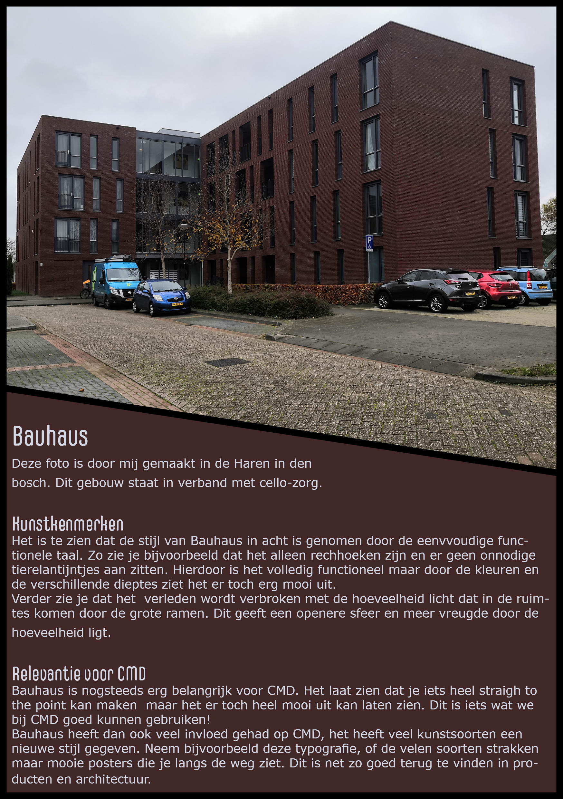
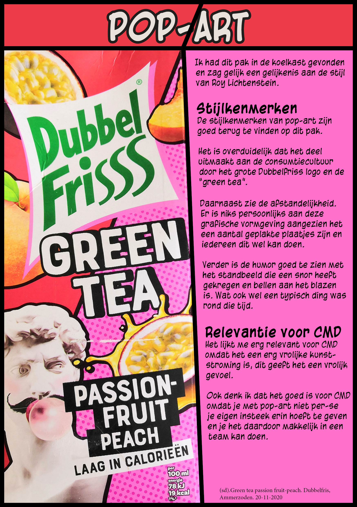
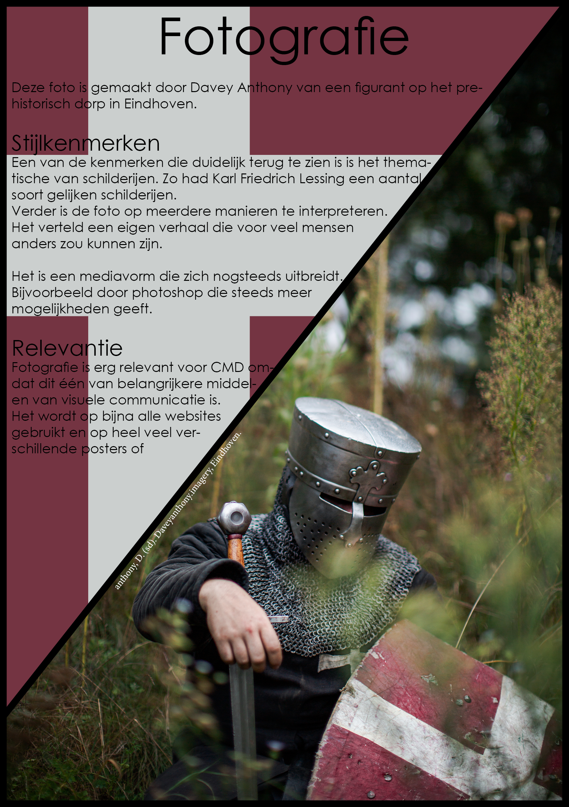
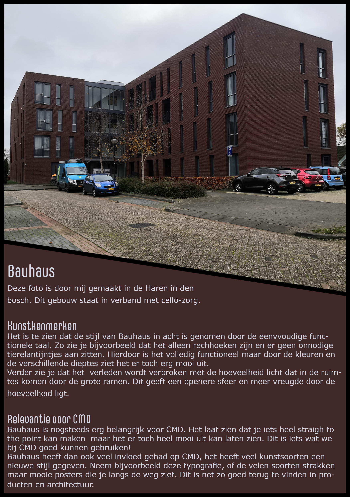
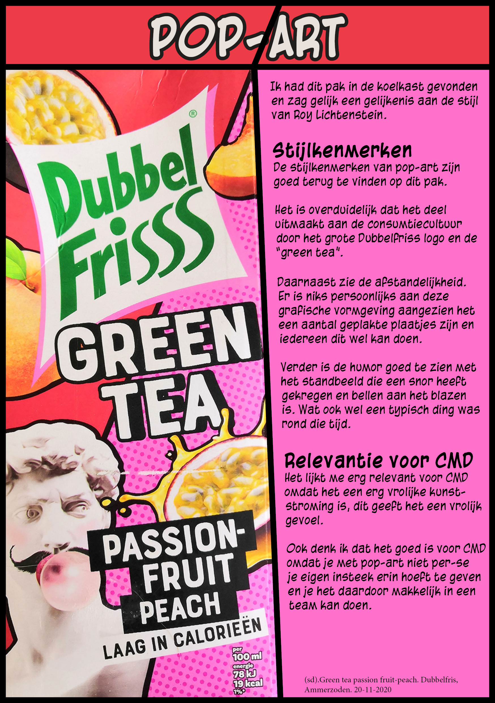
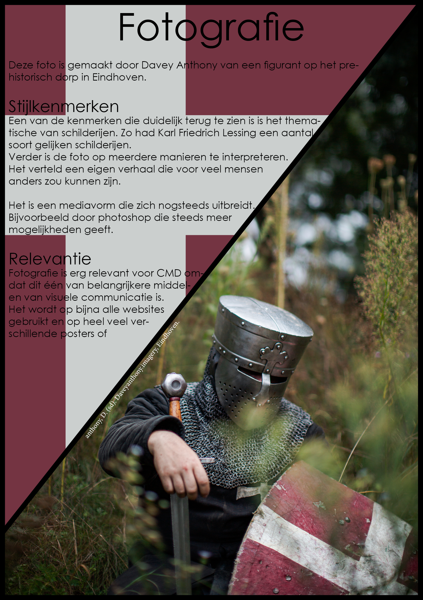

Naam:
Yarick Spruijt
Klas:
G1
Wat ik zou willen leren:
Het lijkt me erg leuk om te leren hoe ik een basis website kan maken die er goed uitziet maar ook nuttig en overzichtelijk is.
  
Yarick Spruijt
G1
Het lijkt me erg leuk om te leren hoe ik een basis website kan maken die er goed uitziet maar ook nuttig en overzichtelijk is.
  